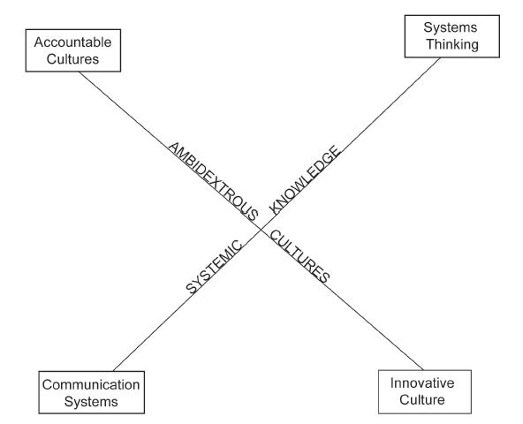

In this concluding chapter, we take a look at the big picture that surrounds organizational capacity for change. Specifically, this entails (a) looking at the centrality of organizations in our lives, (b) distilling the eight dimensions of organizational capacity for change into four organizational attributes, and (c) providing some ideas and tools for assessing your own organization.
We live in an organizational society today. All of us have memberships in multiple organizations, and the effectiveness of these organizations probably varies greatly. Ralph Kilmann, an astute academic and organizational consultant, captures these sentiments well:
Organizations are the greatest invention of all time. They enable people to transcend their own limitations of both body and mind in order to manage the problems of natures and civilizations. Without organized activity, all the other great inventions either would not have been created, or would have been brought to the marketplace. It is hardly an overstatement to suggest that economic prosperity and quality of life for the people of the world are largely determined by the functioning of organizations and institutions.Kilmann (1989), p. ix.
Since organizations are so central to our lives and since they are so important to the fate of humanity, it is imperative that they function well. However, the organizations of the 21st century are not agile enough to deal with the unpredictable and increasingly volatile nature of the environments that they occupy. We need organizations that are more capable of change. This book is dedicated to that premise.
Recall that there are eight dimensions of organizational capacity for change. The first four dimensions focus on the human capital within your firm. These dimensions focused on your human capital are depicted in Figure 11.1 "The Human Capital Required for Organizational Capacity for Change". The first two dimensions, trustworthy leadership and trusting followers, are oriented toward producing organizational trust to the greatest extent possible. Organizational trust refers to the ability of members of an organization to put their lives and well-being at risk in service to the well-being of the overall organization. Hence, it refers to how much frontline workers trust middle managers and senior executives to watch out for their interests. Similarly, it addresses how much top executives trust middle managers and frontline workers to do their jobs well. Trust suggests that we perceive the other as not only competent but also genuinely concerned about the general well-being of others.Gilbert (2005).
The second two dimensions, capable champions and involved midmanagement, are oriented toward unleashing the power of lateral leadership. Lateral leadership is concerned with getting things done across organizational units and functional areas of expertise.Fisher and Sharp (2004). The hierarchical organization will always be with us, but the power of hierarchical authority is diminishing. In its place is the power of influence without authority, in other words, lateral leadership. Crisis situations demonstrate this power quite clearly. When a crisis occurs, people often self-organize into social groups that do amazing things in inexplicably short amounts of time. The trick here is to enable the organization to self organize. In this book, I have emphasized the importance of creating change champions and involving middle management in the change process so that lateral leadership can occur. Figure 11.1 "The Human Capital Required for Organizational Capacity for Change" contains a graphical depiction of the two organizational attributes dealing with human capital in change capable organizations.
Figure 11.1 The Human Capital Required for Organizational Capacity for Change

Organizations also require adequate social infrastructure in order to be change capable. Social infrastructure is the means by which organizational members come to understand and deal with the life of the overall organizational system. One key attribute that is part of the social infrastructure is the level of systemic knowledgeThe degree to which members of an organization understand and focus on the organizational system. within the organization. Systemic knowledge is the degree to which members of an organization understand and are focused on the overall organizational system. Too often, members focus on just their careers or just their organizational subunit. When a critical mass of the organization becomes focused on the overall life of the organizational system, the organization becomes much more open to the environment. This openness translates into more agility and flexibility within the system.Oshry (1996).
The fourth and final organizational attribute that is fundamental to change capability is cultural ambidexterityAn organization’s balancing accountability with innovation.. Many observers note the powerful role that organizational culture plays in facilitating or thwarting organizational change. What is often missed, however, is that change-capable organizations balance accountability with innovation. If the organization overemphasizes accountability, innovation suffers. And if innovation is the sole focus, accountability is ignored. Change-capable organizations optimize on both of these seemingly contradictory cultural virtues.Quinn (1991). Hence, the organization needs to become ambidextrous culturally, using the right-handed accountability norms in balance with the left-handed innovation norms.Judge and Blocker (2008).
If you are now convinced that organizational capacity for change is an important capability that you want to develop in your organization, this final section contains some ideas for assessing your organization’s capacity. There are two ways that your organization’s capacity for change can be assessed. First, you can do this qualitatively by interviewing individuals at various levels of the organization and attempting to characterize it along these eight dimensions in narrative format using anecdotes and stories to illustrate where the organization stands. Second, you can do this quantitatively by administering an anonymous survey to the entire organization and aggregating the numerical results.
Chapter 12 "Appendix A: OCC Survey Instrument" contains a reliable and valid instrument that you can use to quantitatively assess your organization’s change capacity.This survey instrument can also be used as an interview protocol for qualitative interviews. This instrument can be administered online or via paper and pencil to any strategic business unit within your organization.Sometimes organizations are so large, and comprise so many organizational units, that it does not make sense to assess capacity for change for the entire organization. Hence, meaningful assessments are made at the strategic business unit level. A strategic business unit is an organizational subunit with profit and loss responsibility, or a cost center within an organization. For smaller, single-business organizations, the strategic business unit is the entire organization. It is best if you administer the survey to your entire organization since a census provides the clearest picture of where the overall organization stands. However, sometimes a census is just not feasible. In these cases, it is necessary that a random sampling approach be taken. Chapter 13 "Appendix B: 8 Dimensions and Factor Loadings for OCC" illustrates that these items are reliable as shown through the relatively high factor loadings across the eight dimensions derived from a statistical factor analysis. For further reading about the reliability and validity of this instrument, please consider reading the publication that covers this issue.Judge and Douglas (2009). In previous research using this instrument, I have discovered that it is important to sample sufficient numbers of senior executives, middle managers, and frontline employees within the organization. The reason for this is that, in general, top management often has the most optimistic view of the organization’s capacity for change, and frontline workers have the most pessimistic viewpoint. Interestingly, the middle managers’ viewpoint is typically in between these two assessments, and the gap between the midmanagement and senior-level perspective tells you how much work is required to enhance the change capability. Therefore, it is important to collect a representative sample of individual perceptions from the top, middle, and bottom of the organizational hierarchy.
Once you have collected the data from tops, middles, and frontline workers, it is useful to aggregate that data by the three levels and for the overall organization. If you are graphically minded, it can be helpful to construct a radar chart depicting the eight dimensions of organizational capacity for change by adding up the mean score for the four items in each dimension. Since a minimum score would be 4 across the four items and a maximum score would be 40, your organizational score will be somewhere between these two extremes. As can be seen in Chapter 14 "Appendix C: OCC Benchmarking", descriptive statistics are provided for each of the eight dimensions for the over 200 strategic business units that have been previously assessed using the instrument in Chapter 12 "Appendix A: OCC Survey Instrument". Notably, Communication Systems is often the lowest evaluated dimension of the eight, and Trustworthy Leadership is typically the highest evaluated dimension. This suggests that improving your communication before, during, and after change initiatives offers the biggest opportunity for improvement. In addition, it is interesting to point out that the coefficient of variation is highest for systems thinking and communication systems, which suggests that strategic business units vary the most on these two dimensions.
Chapter 15 "Appendix D: OCC Benchmarking" contains the mean values across the three hierarchical subgroups of employees required to assess organizational capacity for change. As might be expected, senior executives consistently rate the organizational capacity for change the highest, and frontline workers consistently rate it the lowest. In all cases except for accountable culture, middle managers rate the dimensions of organizational capacity for change in between these two subgroups. Overall, this benchmark data can be used to compare your organization to a wide variety of organizations operating in a wide variety of industries throughout the world.
A final worthwhile assessmentThe tracking of an organization’s capacity for change over time. is to track your organizational capacity for change over time. This can be done by administering the instrument at one point in time, and collecting data at a later point in time. Some organizational leaders choose to do this at regular intervals (e.g., every year, every quarter); other organizational leaders choose to do this after a major intervention event (e.g., following a postacquisition integration program or a major training program). Armed with longitudinal data, you get a perspective as to whether your organization is improving in its overall capacity for change.
Organizations in the 20th century were built for stability and predictability. Organizations in the 21st century need to be both stable and change capable, what some refer to as “dynamically stable”.Abrahamson (2000). As a result, many organizations today tend to be overmanaged and underled as we transition to a global, information-based economy. This book provides insights, research, practical suggestions, and an approach to systematically assess your organization’s capacity for change using a valid and reliable survey instrument. Both management and leadership are essential skills required for 21st century organizations. This book provides some insights that can enable your organization to survive and prosper in the new millennium.
Figure 11.2 The Social Infrasctructure Required for Organizational Capacity for Change
